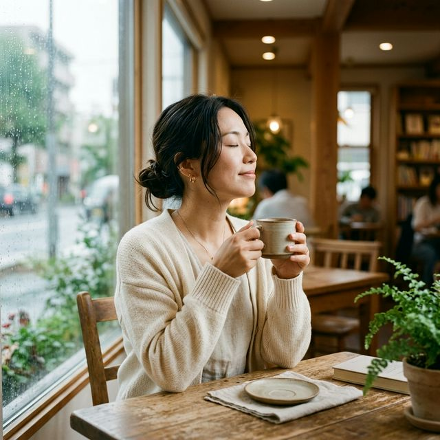

01 身体のもつれを解く
NEUTRAL COFFEE（自家焙煎珈琲）
日々積み重なった疲労やストレスを和らげてくれます。ゆったりと味わう静かな時間が、心にそっと余白を届けます。
Physical Garage（鍼灸治療体験）
頭・首周辺のツボへの刺激から、体液（血液やリンパなど）の循環を整え、身体本来の軽さや心地良さを取り戻すきっかけを与えてきます。
15分 2,000円

02 暮らしのもつれを巡らせる
流しの古本屋 コウヤブックス（古本販売）
「〇〇すべき」「〇〇が正解」目に入る景色全てが、ハードルを上げてくる時代。そんなムダに上がったハードルを、テキトーにいい感じにしてくれる本をセレクトしました。本棚だけでも見に来てください。
法務サポートチーム ミラカタ（行政書士）
身体が解けた後に向き合う、未来の話。複雑な相続や遺言のもつれを、専門家と整理し、安心という名の巡りに変えます。
20分 相談無料 / ワンドリンクオーダー
![[静かな古本と万年筆のイメージ]](https://images.unsplash.com/photo-1456513080510-7bf3a84b82f8?auto=format&fit=crop&q=80&w=800)